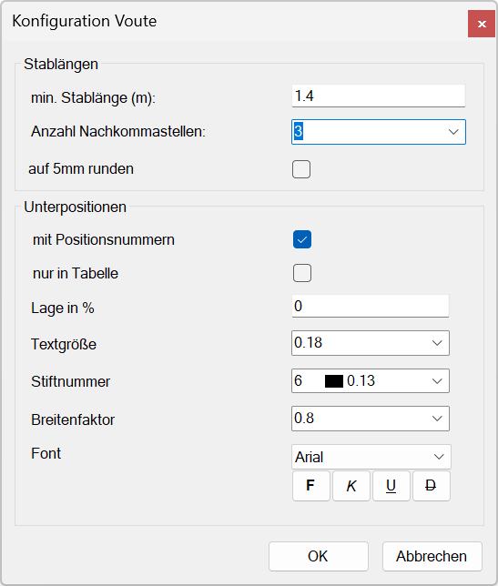
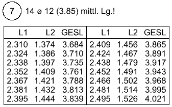
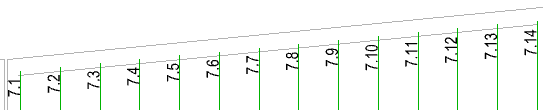
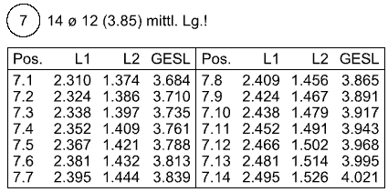

")
")
 |
Stablängen
min. Stablänge [m]
Geben Sie den Grenzwert für die variablen Teillängen an. Dieser Wert wird bei der Verlegung mit den sich ergebenden Teillängen verglichen. Wenn die Stablänge der Verlegung kürzer ist, wird der entsprechende Stab nicht ausgeführt.
Anzahl Nachkommastellen
Nachkommastellen in der Voutentabelle. Wählen Sie zwischen 1 … 3.
Bei der Ermittlung der Teillängen wird mit der angegebenen Anzahl Nachkommastellen gerechnet. Daraus ergeben sich unterschiedliche variable Teillängen. Siehe Tabelle.
auf 5mm runden
Wenn Sie mit drei Nachkommastellen arbeiten, können Sie die Angabe der variablen Teillängen auf 5mm runden. Setzen Sie dazu einen Haken in die Checkbox.
Unabhängig vom Ergebnis in der Tabelle werden die Stäbe mit ihren geometrischen Maßen gezeichnet.
Geometrisches Maß |
Variable Teillänge(n) L bei Anzahl Nachkommastellen |
|||
|---|---|---|---|---|
1 |
2 |
3 |
||
|
|
|
|
|
1.5539 |
1,6 |
1,55 |
1,554 |
1,555 |
1.4985 |
1,5 |
1,50 |
1,499 |
1,500 |
1.4431 |
1,4 * |
1,44 |
1,443 |
1,445 |
1.3877 |
1,4 * |
1,39 |
1,388 |
1,390 |
1.3322 |
1,3 |
1,33 |
1,332 |
1,330 |
*) werden zusammengefasst (n = 2) |
||||


Unterpositionen
Falls während der Verlegeroutine eine Voutentabelle generiert wird (Abfrage: Tabelle? (1=Ja, 0=Nein)), können die Angaben zur Positionierung nachfolgend angepasst werden.
Mögliche Kombinationen |
Fall 1: |
Fall 2: |
Fall 3: |
|---|---|---|---|
mit Positionsnummern |
|
|
|
nur Tabelle |
|
|
|
·Fall 1: Keine Positionsnummern in der Voutentabelle und an der Verlegung. Es werden nur die einzelnen Teillängen (L1, L2, L3 usw.) mit der entsprechenden Gesamtlänge angegeben.
 |
·Fall 2: An die einzelnen Stäbe wird die Position mit der Indexnummer (z. B. 7.1, 7.2, 7.3 usw.) angeschrieben. Die Positionsnummern werden auch in der Voutentabelle angegeben.
 |
·Fall 3: Keine Positionsnummern an der Verlegung. Die Positionsnummern werden nur in der Voutentabelle angegeben.
 |
Lage in %
Geben Sie den Abstand der Positionsnummer vom jeweiligen Stabanfang (unten) in % seiner Länge an.
Textgröße (cm)
Eingabe der Textgröße für den Positionstext.
Stiftnummer
Auswahl der Stiftnummer.
Breitenfaktor
Angabe des Breitenfaktors.
Font
Auswahl der Schriftart und -auszeichnung. Bei Windows® True Type Schriften können zusätzlich die Attribute "fett", "kursiv", "unterstrichen" und "durchgestrichen" gewählt werden.
OK
Alle Einstellungen werden übernommen.
Abbrechen
Vorgenommene Änderungen an den Einstellungen werden verworfen. Die vorher eingestellten Parameter werden wieder aktiv.